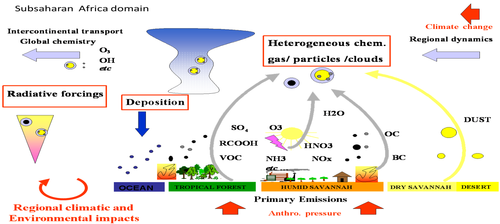

Research Topics (examples)
- The regional climatic impact of dust and
biomass burning aerosol on thermodynamic and dynamics of Monsoon systems
(West Africa, India) as well as particular sea
basins (Mediterranean, Caspian).
- The direct and semi-direct effects of African biomass burning aerosol on southern African climate
and the south eastern Atlantic stratocumulus deck.
- The tropospheric
chemistry over
Africa in
connection with
regional nitrogen
cycle,
including the impact of biogenic
emissions and climate change
- The processes impacting the emission and deposition flux of key chemical elements to marine and
terrestrial ecosystems (North Pacific Ocean, West Africa and the Mediterranean basin).
- The regional climate and land-use change effects on Ambrosia distribution
and pollen concentrations in Europe
Illustration of coupled processes
